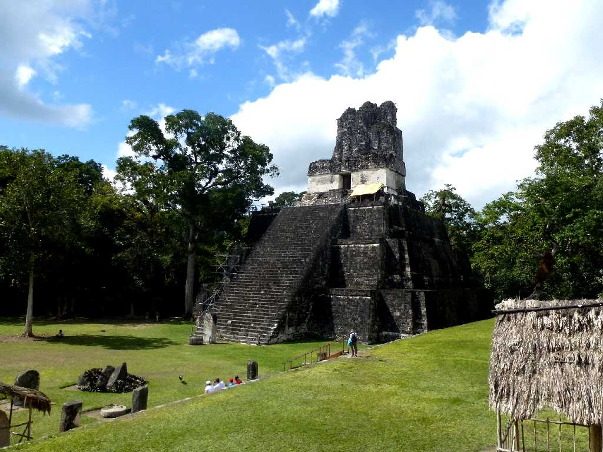
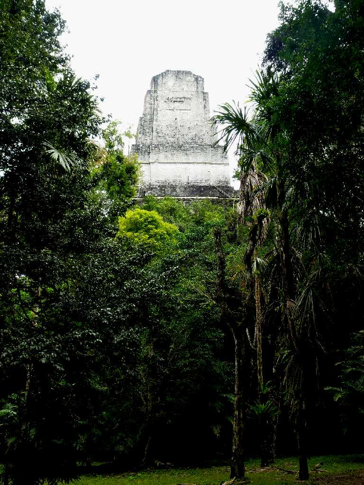
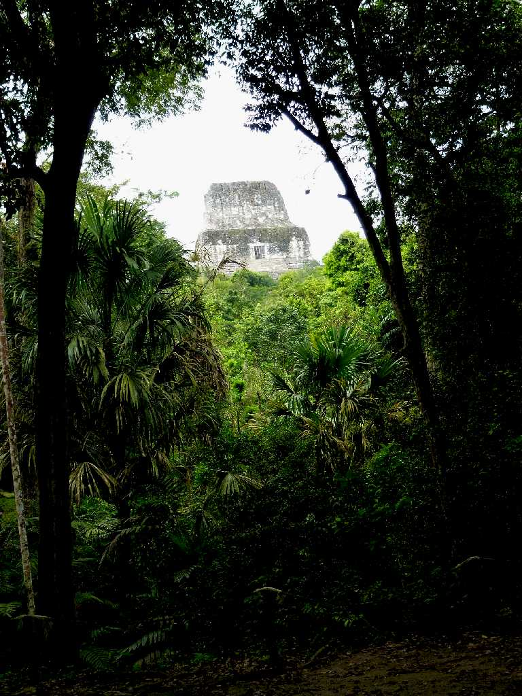
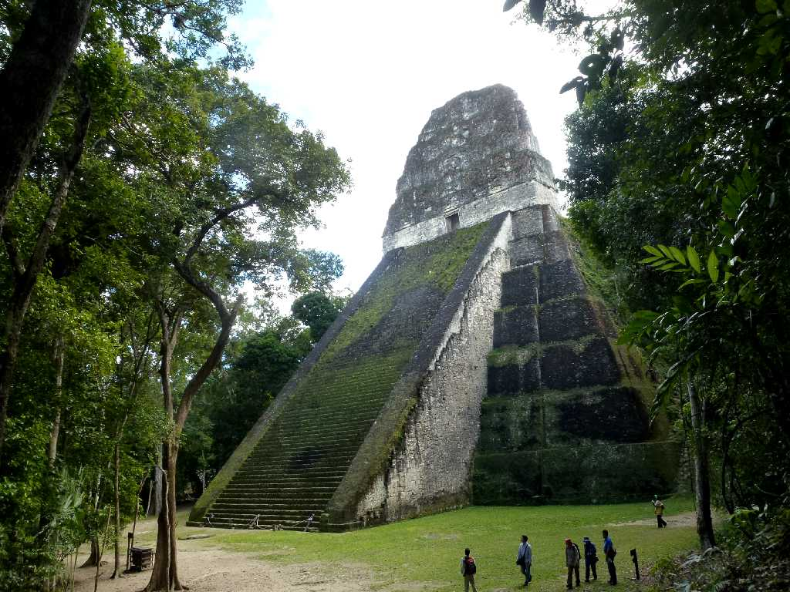
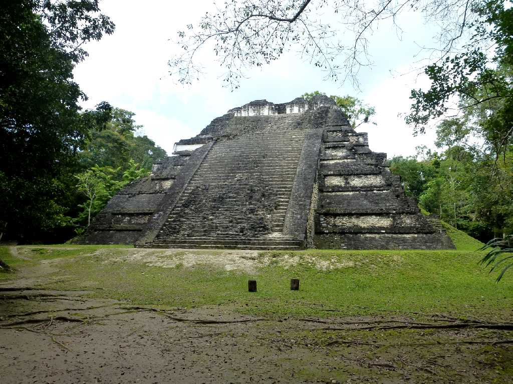
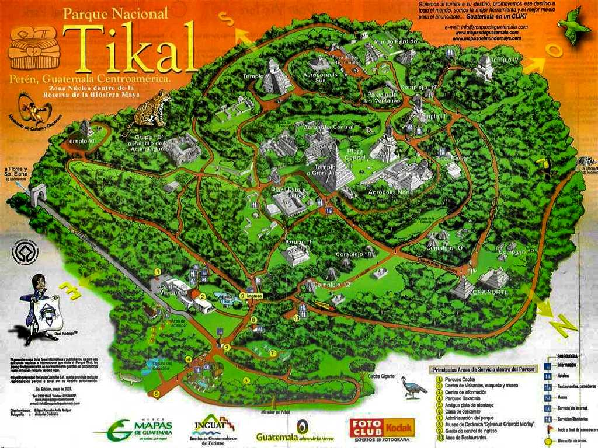

Temple 1 Tikal
１号神殿は７３４年にティカルの王ハサウ･チャン･カウィールの墓として創られた９層からなる高さ５１ｍの階段ピラミッドで上部の神殿入口にジャガーの彫刻があるので大ジャガー神殿と呼ばれている

Temple 2
２号神殿はティカル王ハサウ･チャン･カウィールの息子イキン･チャン･カウィールにより創られた神殿で高さ４５ｍある３層からなる階段ピラミッドで最上部の神殿入口には仮面の彫刻があり仮面の神殿と呼ばれている

Temple 3
３号神殿は９世紀に創られた高さ５５ｍある７層からなる階段ピラミッドで最上部の神殿入口にはジャガーの彫刻がありジャガー神官の神殿と呼ばれている

Temple 4
４号神殿は８世紀にティカル王ヤシュ・アク・アフ・チャン・カウィールにより創られた高さ７０ｍある５層からなる階段ピラミッドでヤシュ・アクの神殿と呼ばれている

Temple 4 Tikal National Museum Guatemala City
グアテマラシティーの国立考古学民族博物館にある見事なティカル４号神殿の２７代王イキン・チャン・カウィールの戦勝記念碑

January 28 2013 Temple 4 Tikal
４号神殿に登り１～３号神殿を望む

Temple 5
５号神殿は８世紀に王の墓として創られたと考えられている高さ４７ｍの階段ピラミッド

Temple 6
６号神殿は７世紀に創られたティカルで最古の神殿で高さ４０ｍあり頂上にマヤ王の肖像が刻まれた石碑がある

ティカル遺跡は紀元前４００年から紀元後９００年頃まで栄えた世界最大のマヤ遺跡


 AI解説
AI解説